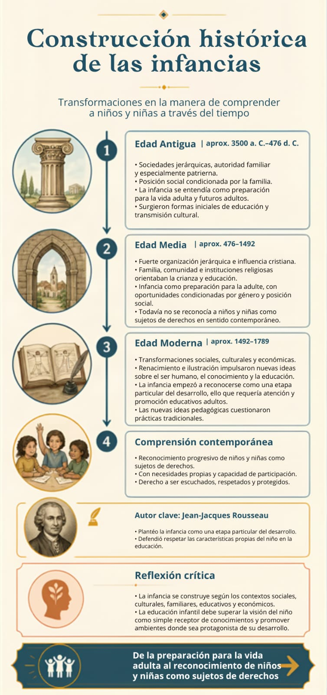

Britney Nicole Plata Ariza
Integrante / RelatoraEstudiante activa de la licenciatura. Comprometida con la articulación teórica del grupo y el desarrollo reflexivo de la línea de tiempo sobre la infancia.
Transformaciones en la manera de comprender a niños y niñas a través del tiempo.
Explorar la línea de tiempoEsta página reúne el primer avance del producto integrador del curso. Su propósito es comprender que las infancias no se han entendido de la misma manera en todas las épocas ni en todos los contextos. La línea de tiempo permite reconocer transformaciones históricas, sociales, culturales y educativas, y relacionarlas con la manera actual de comprender a niños y niñas.
Estudiante a cargo del desarrollo del producto integrador.
Estudiante activa de la licenciatura. Comprometida con la articulación teórica del grupo y el desarrollo reflexivo de la línea de tiempo sobre la infancia.
Transformaciones en la manera de comprender a niños y niñas a través del tiempo. Haz clic en cada etapa para expandir o contraer la información.

Esta pestaña queda creada y se desarrollará en el siguiente reto.
Esta pestaña queda creada y se desarrollará en el Reto 4.
Esta pestaña queda creada y se desarrollará en el Reto 5.
Benchimol, K., Bidese, M., Gentile, M. F., Keserman, A., Juárez, M., Sokolowicz, A., Zapiola, M. C., Amado, G., & Espínola, C. (2023). Infancias en plural. Universidad Nacional de General Sarmiento.
Chica Lasso, M. F., & Rosero Prado, A. L. (2012). La construcción social de la infancia y el reconocimiento de sus competencias. Itinerario Educativo, 26(60), 75–96. https://doi.org/10.21500/01212753.1401
Pedraza Ramírez, C. E., Morales Mantilla, S. M., Gómez Bohórquez, P. T., Rodríguez Bernal, Y., Pérez Ospina, J. M., & Villamizar Parada, N. J. (2022). Representaciones sobre la educación infantil: Infancias en contingencia. Sello Editorial UNAD. https://doi.org/10.22490/9789586518710